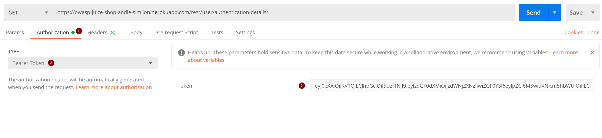
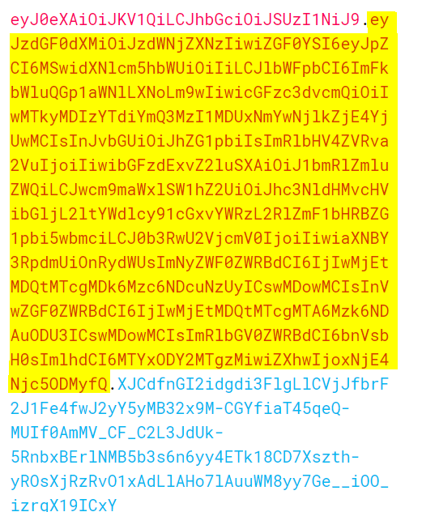

Zoals altijd kunnen de oefeningen binnengehaald worden door een git pull te doen.
of de git repository te clonen als je deze nog niet hebt.
-
Ga naar jouw eigen juice shop die je hebt opgezet in het eerste labo. De url zou er als volgt moeten uitzien als je de instructies juist hebt gevolgd:
https://gitpod.io/
Opgelet: Dit kan een tijdje duren. Hou hier rekening mee.
-
Open de Chrome Developer Tools en zorg ervoor dat de Network tab open staat.
-
Log in als de administrator van de juice shop.
Tip: Deze login gegevens heb je in vorige labo's gevonden.
-
Zoek nu de login request terug in de lijst van network calls in de Network tab.
Open deze en ga op zoek naar de JWT token die wordt aangemaakt bij het inloggen.
Neem een screenshot waar deze token duidelijk opstaat en sleep deze hieronder in
Vul ook hieronder de volledige JWT token in:
-
Ga nu naar de Application tab en zoek in de Local Storage waar deze token wordt opgeslagen. Neem hiervan een screenshot en duid duidelijk aan waar het staat. Sleep deze hieronder in:
-
We gaan nu een aantal andere manieren bekijken om een request na te bootsen. We gaan eerst deze request leren uitvoeren via het curl commando.
curl is een command line tool die toelaat http requests uit te voeren vanuit git bash.
-
Voer het commando
curl -i https://www.google.com/blabla
uit om te testen dat het bij jou werkt.
De -i optie zorgt ervoor dat je ook de response headers en de http status code te zien krijgt.
Welke status code geeft deze website terug en waarom?
-
De chrome developer tools laten het ook toe om http requests te kopieren als curl commando zodat je dit niet elke keer zelf moet ingeven.
Kopieer de login request door er met je rechter muisknop op te klikken en dan vervolgens te kopieren als curl commando.

-
Plak dit commando in je git bash terminal in visual studio code. Pas dit commando wel nog aan zodat je ook nog de http response headers te zien krijgt.
Neem een screenshot van het resultaat en zorg er voor dat de headers en de response body goed te zien is. Sleep deze hieronder in:
-
Ga naar de administration page van de juice shop en probeer (op het pad /#/administration). En probeer via de chrome developer tools de authentication-details url te vinden.
Je kan deze kopieren door er met je rechter muisknop op te klikken, copy en dan copy link address te doen. Geef de url hier onder in:
-
Installeer Postman door naar het adres https://www.postman.com te gaan en de installatie procedure te doorlopen.
-
Maak in postman een GET request naar de url die je in de vorige stap gevonden hebt (die van authentication-details)
Waarom werkt dit niet?
-
Doe dezelfde GET request in postman maar geef deze keer de Authorization Header mee. Je doet dit op de volgende manier:

Neem een screenshot van het resultaat en plak dit hieronder in:
-
Je kan ook een volledige curl commando importeren in Postman. Kopieer het curl commando van de authentication-details en vervolgens doe je in postman:
Import -> Raw Text en plak je de volledige curl commando van deze request hier in en druk je vervolgens op import.
-
Nu gaan we eens het token decoden zodat we kunnen kijken wat de inhoud ervan is. Ga naar jwt.io en ga naar debugger. Daar kan je het JWT token in plakken dat je hiervoor gevonden hebt.
Maak een screenshot van deze website zodat het encoded gedeelte en decoded gedeelte duidelijk zichtbaar zijn. Sleep deze screenshot hieronder in:
-
Er zijn hier twee interessante velden. De expiration time (exp) en issued at time (iat). Op welke datum (en om hoe laat) vervalt deze token.
Tip: De tijd is uitgedrukt in iets dat de unix timestamp heet. Dit zijn het aantal milliseconden sinds 1 januari 1970. Zoek zelf op het internet hoe je dit moet omzetten naar een leesbare datum.
-
Wat staat er in de payload van de jwt token dat er absoluut niet mag instaan?
-
Gebruik het onderstaande token om de authentication-details endpoint aan te spreken (in postman).
eyJ0eXAiOiJKV1QiLCJhbGciOiJSUzI1NiJ9.eyJzdGF0dXMiOiJzdWNjZXNzIiwiZGF0YSI6eyJpZCI6MSwidXNlcm5hbWUiOiIiLCJlbWFpbCI6ImFkbWluQGp1aWNlLXNoLm9wIiwicGFzc3dvcmQiOiIwMTkyMDIzYTdiYmQ3MzI1MDUxNmYwNjlkZjE4YjUwMCIsInJvbGUiOiJhZG1pbiIsImRlbHV4ZVRva2VuIjoiIiwibGFzdExvZ2luSXAiOiIwLjAuMC4wIiwicHJvZmlsZUltYWdlIjoiYXNzZXRzL3B1YmxpYy9pbWFnZXMvdXBsb2Fkcy9kZWZhdWx0QWRtaW4ucG5nIiwidG90cFNlY3JldCI6IiIsImlzQWN0aXZlIjp0cnVlLCJjcmVhdGVkQXQiOiIyMDIxLTAzLTMxIDEzOjMyOjU1LjQ1MiArMDA6MDAiLCJ1cGRhdGVkQXQiOiIyMDIxLTAzLTMxIDEzOjMyOjU1LjQ1MiArMDA6MDAiLCJkZWxldGVkQXQiOm51bGx9LCJpYXQiOjE2MTcxOTc2NTksImV4cCI6MTYxNzIxNTY1OX0.Byi9R76JFCkYm4qIIMNrbfpymqGssIp7jSuQACkzme9QrgoqqjgndsFdEkjei74tPRr9gtepettgd5-LCW6GEqrtAn47pNFrn98aBaDHz7lnJ6E5F8Vm7ZoiTHDOODHszqy4oDRORpME9CYyJMcII6mSauA6MJtJ5WIa6UmQolk
Wat geeft deze terug als response:
Waarom is dit?
-
We gaan nu eens een token proberen aan te passen. Kopieer het tweede deel (de payload) van de JWT token (na het eerste puntje) en decodeer dit deel met een base64 decoder (base64decode.org of burpsuite)

-
Vervolgens pas je hier het email adres en de id aan naar iets anders en encodeer je vervolgens dit terug naar base64 (base64encode.org of burpsuite).
-
Kopieer nu dit stukje terug op dezelfde plaats in de JWT token waar het vandaan komt en gebruik nu deze token om de authentication-details endpoint aan te spreken (in postman)
Wat geeft deze terug als response:
Waarom is dit?
-
Print deze pagina af als PDF en slaag deze op als naam_voornaam_labo_tokens.pdf en stuur deze door via digitap.